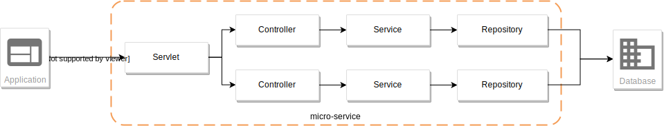
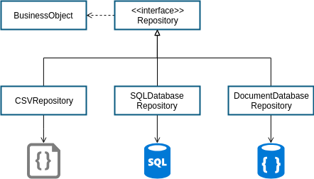
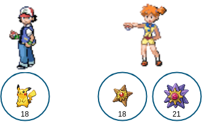
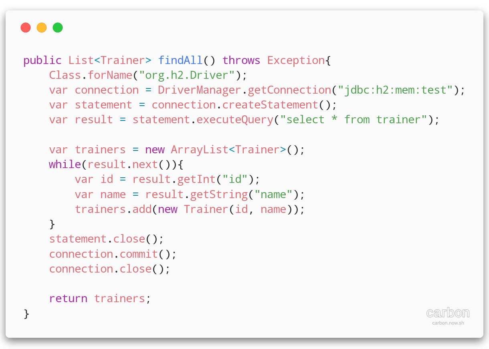
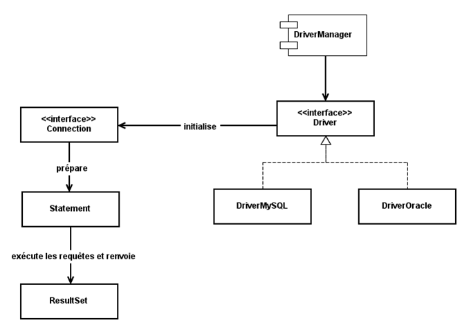
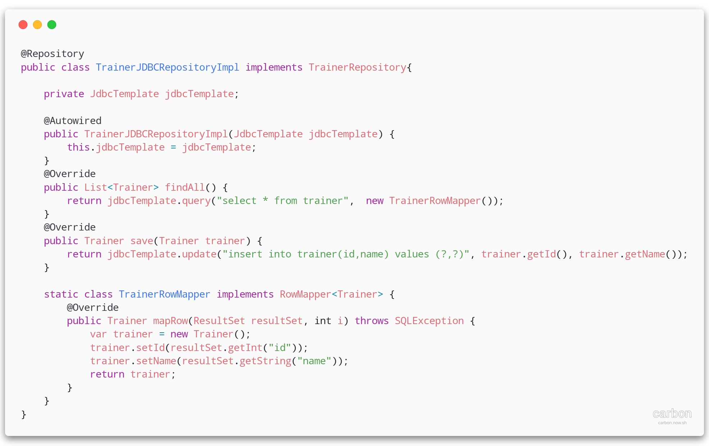
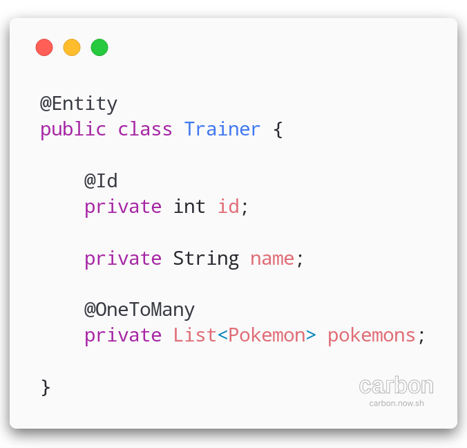
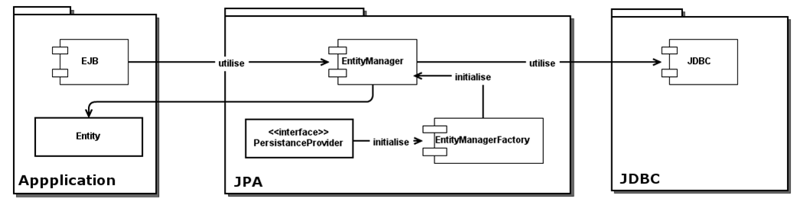
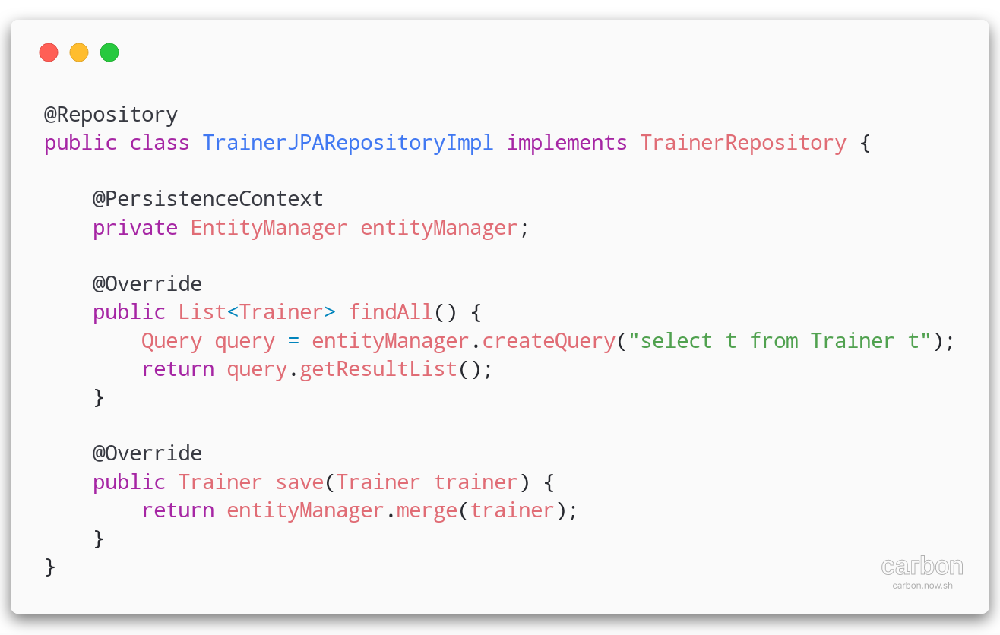
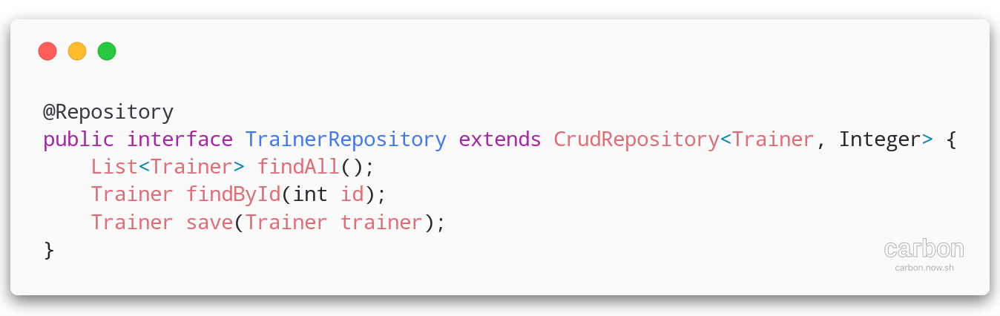

ALOM
🔖 Persistance de données avec JPA
UBER

 Un micro-service c'est :
Un micro-service c'est :
- Un ensemble de fonctionnalités du même domaine métier
-
Un ou plusieurs canaux de communication
- HTTP - REST/JSON
- Une source de données dédiée
🔎 un micro-service Java
On s'appuie sur les technologies connues: les servlets !
🔎 La source de données
Une application :
- fournit un service
- manipule des données
Problématique :
- comment enregistrer des données?
- comment accéder aux données enregistrées?
Design Best Practices
👮 S.O.L.I.D
Design Pattern
💉 Injection de dépendance
Design Pattern
DAO - Data Access Object
🔎 La source de données
- des fichiers
- une API
- une base de données SQL
- une base de données NoSQL
Bases de données SQL
Modèle relationnel (SQL)
- Stockage de l'information en tables
- Relations entre les tables (clés étrangères)
- Requêtage dans un langage dédié : SQL
Bases de données SQL
Comment lier le modèle BDD relationnel et le modèle objet Java?

| id | name | sprite |
| 25 | pikachu | pikachu.png |
| 120 | staryu | staryu.png |
| 121 | starmie | starmie.png |
| id | name |
| 1 | ash |
| 2 | misty |
| trainer_id | pokemon_type | level |
| 1 | 25 | 18 |
| 2 | 120 | 18 |
| 2 | 121 | 21 |
à la dure : JDBC
Fonctionnement de JDBC
JDBC avec  : JDBCTemplate
: JDBCTemplate

JPA - Java Persistence API
Surcouche à JDBC - Fournit un moyen de mapper les tables aux objets et une abstraction de l'exécution de requêtes via les annotations
Fonctionnement de JPA
JPA avec
Repository Spring/JPA (mode DAO):
 spring-data JPA
Génération automatique des méthodes au runtime à partir d'interfaces!
TP